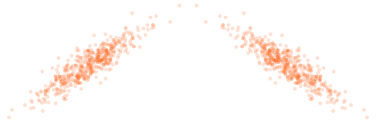
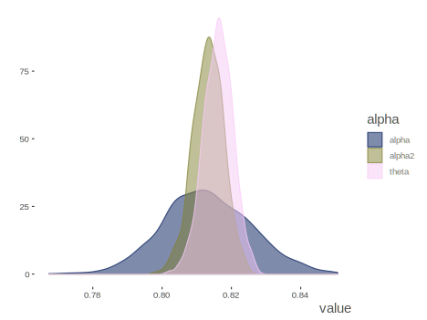

Table of Contents
Goals/Abstract
To examine reliability from different perspectives, and the uncertainty in the measurement of it.
Audience
Applied practitioners of statistics in fields where the reporting of reliability of measurement is commonplace (e.g. psychology, education, biomedical sciences). Supplemental material may go deeper and be of interest to methodologists.
The Meaning of Reliability
What we talk about when we talk about reliability
When used in everyday discourse, no one really wonders what we mean when we say something is reliable. If you are talking about a car and you say it’s reliable, it means it won’t break down on you. If we talk about a person being reliable, it means we can depend on them to provide consistent behavior, e.g. regarding a specific task. Reliable electric service means one can keep the lights on all day. This everyday notion of reliability is closely related to the notion of dependability as well. We can depend on the person, car, or whatever, to do what we expect. Even though we may agree on this concept of reliability, pause should be taken. A reliable car from the 1970s would not meet acceptable standards for reliability these days. Your assessment and standard of reliablity may be wholly different if talking about a brother or sister. Thus, some fuzziness is inherent even with the everyday notion of reliability.
While we can talk about reliability from an everyday standpoint, the concept has been carried over to the realm of scientific analysis of data as well. And while the concept may be applied, it must of course become more precise, as scientific endeavor dictates. It may surprise some that reliability has been studied scientifically for over a century. With that knowledge however, it should not be too surprising that numerous statistical techniques have been advanced over that time, and the varieties will often align with different notions of reliability.
Even when positing a specific statistic for reliability, our investigation should not end there. As with the everyday notion of reliablity, there is uncertainty in the scientific measurement of it, and we should have some grasp of the nature of that uncertainty, else we risk becoming overly confident in our understanding of a measure. Thus what holds for other statistical measures - means, regression coefficients, and so on - will apply to any measurment of reliability as well.
In what follows we seek to trace out a few of the definitions of reliability associated with some of the more common statistical measures of it. Classical test theory will lay the foundation, after which we will explore an understanding of reliability from simple correlations, to the concept of consistency, and finally toward thinking about latent constructs and measurement error more deeply. Demonstrations of each notion of reliability will then be provided, not focused on merely producing a statistic, but establishing the uncertainty surrounding it, and understanding it with that context. General comparisons and contrasts about the different approaches will be made, and suggestions about practical ways to proceed offered. And finally, much more advanced and technical exploration will be undertaken in the supplemental addendum to this document.
Statistical Reliability
Classical Test Theory
The foundation for understanding reliability from a statistical standpoint resides with Classical Test Theory. The title may be offputting at first blush, but it is conceptually straightforward. Even then, as McDonald McDonald (1999) put it-
The mathematics of the theory is extremely simple. The application of the theory can be problematic.
So what are the mathematics? Simple arithmetic.
\[\mathrm{Observed\ Score = True\ Score + Error}\]
But what does this mean? Any measurement we take of something provides us an observed score. For example, we step on a scale and note our weight. A perfect measurement would provide the right score every time, and thus our observed score would equal the true score. But no measurement is perfect1, i.e. everything is measured with some amount of error, however small. The error can be random, variability caused by unknown sources, but which will not affect our average account of a thing. Our weight from the scale goes up and down but on average it is correct. Error can also be systematic, where the measurement is always off by some amount, and our observed score is always too high or too low. In this scenario, our scale may always be displaying a greater weight than it should. Unfortunately, it is very difficult, if not impossible, to distinguish the two in many typical circumstances.
So conceptually we can simply think of an observation of any measure being composed of whatever the true score would be plus some associated error. The key idea is that the assessment of the error will allow us to understand how reliable our measure is.
Correlation
Let’s start with correlation. If two things are correlated, they move in tandem, either they go up and down together, or as one goes up the other goes down and vice versa. At the very least of our understanding of reliability is that similar measurements of the same thing should be correlated. But this correlation might be assessed by different means.

Test-retest
Let’s say we now take the weights of one hundred people. Then we do so again six months later. We should expect that heavier people at the first measurement will likely be heavier the second time as well. Same for lighter people.
That correlation of the two measurments can provide us our first attempt at measuring reliability. Typically referred to as test-retest reliability, this notion gives us some understanding of the stability or consistency of measurement across time. While this is useful and straightforward, many situations will not allow for multiple testing occasions, so we’ll need other alternatives.
Parallel Forms
One method instructors used to use to thwart cheating was to provide half of the class one version of the test, and the other half a different version, that covered the same content, but which had slightly different questions/answers. When passed out randomly, students couldn’t peek at their neighbor’s test and gain any advantage. In terms of classical test theory, if we gave these parallel/alternate forms to each student, the true score for any student would be the same, regardless of what form they took, and any observed score differences would be error.
In the more common applied research setting, the question then is how do we know if we are dealing with parallel tests? Unless they are derived as such, we cannot say for certain, and this usually only happens in educational settings, such as with the SAT or GRE. Beyond that it is probably rare that resources allow for parallel forms of measurement, or if they do, enough forms to test the assumption of parallelism.
Split-half

A notion of reliability not too far removed from the previous is that of split-half reliability. If our measure is made up of multiple observations, say, survey questions, scale items, or whatever, we can just take a random half of them, get a total score for each individual, and do the same with the other half. Now each person has two scores, and their correlation gives us a glimpse of the reliability of the measure. Consider it a poor man’s alternate forms approach.
Consistency
Split-half reliability allows us to estimate reliability with only one test. This is important, as many times we can only measure something in one setting, even if multiple times within that setting. For example, there may be only one qualifying exam, one survey administered, and so forth. As such we need some way to assess the internal structure of the measure. Some of the most commonly used statistics, such as coefficient \(\alpha\), offer such a measure. For that, it will still be based on simple correlations, but as we don’t have multiple tests, the correlations will regard the items or instances of the measure we have from the setting observations occur. The average correlation across all items will serve as the basis for an assessment of reliability, but the number of items will have a say as well.
Measurement of a Construct
Finally, we can think about reliability in terms of how well the tests measure the construct. Some would call this validity, though the distinction is muddier in practice. The observed measurements we have are imperfect measurements of the thing they are purported to measure. Estimation of that imperfection is the whole of reliability analysis. We can get at this notion more intently with tools from factor analysis, and can begin to think about reliability in terms of how much of the latent constuct is actually in the observed measures.
The psychometric definition of reliability
We can summarize all of the previous by returning to the classical test theory notion of reliability. In general, the reliability of a measure \(\rho\) is the proportion of true score variance to the total observed variance.
\[\rho = \frac{\sigma^2_T}{\sigma^2_T + \sigma^2_e}\]
Demonstrations
Preliminaries
Before diving into demonstration we will first describe the data and analytical approach. Both observed and simulated data will be presented, followed by discussion of the analysis.
Data Description
Observed Data
The Big Five Inventory is a popular personality scale use in a wide variety of applications. For our example, we will have at our disposal 25 items corresponding to the five subscales- Agreeableness, Openness, Extroversion, Conscientiousness, and Neuroticism. However, we will concern ourselves with the Neurtocism subscale specifically. This particular data is available in the R package psych, and regards 2800 subjects as part of the Synthetic Aperture Personality Assessment (SAPA) web based personality assessment project. The items are six-point scales ranging from 1 Very Inaccurate to six 6 Very Accurate, and are statements that may reflect the person’s assessment of themselves. The neuroticism items in particular are:
- N1: Get angry easily.
- N2: Get irritated easily.
- N3: Have frequent mood swings.
- N4: Often feel blue.
- N5: Panic easily.
More details can be found with the data object’s (bfi) associated helpfile. The following shows how the data may be obtained. To make comparisons across the different approaches more easily comparable, I go ahead and remove the rows with missing data.
library(tidyverse)
library(psych)
neuroticism = bfi %>%
select(N1:N5) %>%
drop_na()Use only small fraction and compare to full in later discusion of sample size?
Basic descriptives and correlations are shown next. While there is some missing data, some reliability statistics will be based on pairwise correlations, and thus use all available information. Some of the item correlations are not that strong, but this is a realistic situation for many data in social and related sciences.
| Variable | N | Mean | SD | Median | Missing |
|---|---|---|---|---|---|
| N1 | 2694 | 2.93 | 1.57 | 3 | 0 |
| N2 | 2694 | 3.51 | 1.53 | 4 | 0 |
| N3 | 2694 | 3.22 | 1.60 | 3 | 0 |
| N4 | 2694 | 3.19 | 1.57 | 3 | 0 |
| N5 | 2694 | 2.97 | 1.62 | 3 | 0 |
| N1 | N2 | N3 | N4 | N5 | |
|---|---|---|---|---|---|
| N1 | 1.00 | 0.71 | 0.56 | 0.40 | 0.38 |
| N2 | 0.71 | 1.00 | 0.55 | 0.39 | 0.35 |
| N3 | 0.56 | 0.55 | 1.00 | 0.52 | 0.43 |
| N4 | 0.40 | 0.39 | 0.52 | 1.00 | 0.40 |
| N5 | 0.38 | 0.35 | 0.43 | 0.40 | 1.00 |
Simulated/Ideal data
One of our investigations into reliability will involve what is commonly referred to as factor analysis. Along with the observed data just described, the psych package additionally provides an easy means to simulate data with known factor structure. We can specify the number of factors, loadings, number of items among other things. Doing so will allow us to know what to expect from the factor analysis portion of the exploration, and explore uni- vs. multidimensional structure if desired. As a starting point, we will simulate a data set regarding a congeneric factor model, one in which the factor structure regards just one latent variable underlying the observed items, but where the loadings for the observations need not be the same. We will have six items for this data, with moderate to strong loadings between .4 and .7.
set.seed(123)
N = 1000
n_items = 6
loadings_congeneric = c(.4, .4, .5, .5, .6, .7)
cor_congeneric = sim.congeneric(loadings_congeneric, N = N)
data_congeneric =
mvtnorm::rmvnorm(n = N,
mean = rep(0, n_items),
sigma = cor_congeneric) %>%
as_data_frame() %>%
rename_all(str_replace, pattern = 'V', replacement = 'item_')| item_1 | item_2 | item_3 | item_4 | item_5 | item_6 |
|---|---|---|---|---|---|
| -1.158 | 0.592 | 2.019 | 0.797 | 1.869 | 0.329 |
| -0.038 | 1.193 | 0.635 | 0.845 | 0.108 | 0.213 |
| 0.398 | 0.211 | 0.828 | -0.138 | -0.534 | 1.333 |
| -0.712 | 0.194 | -1.546 | -0.551 | 1.944 | 0.084 |
| 0.839 | 0.521 | -1.203 | 0.798 | -0.822 | 0.606 |
| -1.098 | -0.047 | 0.429 | -0.356 | -0.116 | 0.364 |
Analytical Approach
The analysis of the data will be conducted on both the observed and simulated data sets. We will show three conceptual estimates of reliability, but, in addition, we will focus on the estimated uncertainty in those estimates. Far too often reliability statistics are reported without any thought of the underlying models, or that there is possibly notable uncertainty in the estimate. The three conceptual estimates include the most popular estimate of reliability, Coefficient \(\alpha\), followed by two model-based approaches - generalizability theory and latent variable/factor analysis.
Coefficient \(\alpha\)
Coefficient \(\alpha\) is one of the most popular measures of reliability. Sometimes considered a measure of internal consistency, it is a function of the average covariance/correlation among the observations/items, the total variance of the test, as well as the number of items. It is also interpreted as the average of all possible spit-half reliabilities. While it is descriptive in nature, it actually assumes a unidimensional factor structure as the underlying model representation, or in other words, that all the items correspond to the same underlying construct2. The standardized formula only requires the two values of the number of items \(k\) and average inter-item correlation \(\bar{r}\).
\[\alpha = \frac{k\bar{r}}{1+(k-1)\bar{r}}\]
All else being equal, simply increasing the number of observations/items will give you a higher reliability. In some contexts this may make sense, as the goal is to use an average or sum score, and we are interested in the reliability of that instead of any particular item. In other contexts such an estimate may overestimate the type of reliability we care about.
The following shows the results from the psych package. In addition to both raw and standardized \(\alpha\) measures, it also offers Guttman’s lambda 6, a ‘signal-to-noise’ ratio and tohre info. Shown are the \(\alpha\) values, absolute standard error, and average/median inter-item correlation.
| Raw | Standardized | Avg. Inter-item cor | Median r | ASE |
|---|---|---|---|---|
| 0.81 | 0.81 | 0.47 | 0.41 | 0.01 |
These statistics show how \(\alpha\) changes when the item is dropped. We can see that items N1 through N3 are more useful measures, as dropping them would result in a significant drop in \(\alpha\).
| Raw | Standardized | Avg. Inter-item cor | Median r |
|---|---|---|---|
| 0.76 | 0.76 | 0.44 | 0.41 |
| 0.76 | 0.76 | 0.45 | 0.41 |
| 0.75 | 0.76 | 0.44 | 0.39 |
| 0.79 | 0.80 | 0.49 | 0.49 |
| 0.81 | 0.81 | 0.52 | 0.53 |
The Uncertainty of \(\alpha\)
One issue with Coefficient \(\alpha\) is that the uncertainty in the estimate is rarely reported, even though it has been known for some time how to derive a confidence interval for it, and tools are readily available for producing it. The MBESS package does this in a variety ways. One uses an approach noted in Feldt et al. Feldt, Woodruff, and Salih (1987), and which assumes fixed, rather than random, items and subjects. Another is based on a normal distribution approximation Zyl, Neudecker, and Nel (2000). The other method is via the bootstrap Kelley and Pornprasertmanit (2016), calculating \(\alpha\) for \(R\) number of bootstrap resamples of the data. We will use the latter for our purposes. Results are shown below, with the bootstrapped value based on 1000 iterations.
| LL | alpha | UL | |
|---|---|---|---|
| bootstrapped estimate | 0.8004 | 0.8133 | 0.8253 |
We can now see that our estimate of \(\alpha\) would best be summarized as some value between 0.80 and 0.83.
A Bayesian Approach
An alternative approach to estimating the uncertainty in \(\alpha\) would be a Bayesian estimate. We could estimate the value by first estimating the correlation matrix underlying the assumed multivariate normal distribution of the observations/items. Thus the Bayesian \(\alpha\) would be based on the posterior predictive distribution given the estimate of the correlation matrix Padilla and Zhang (2011). Alternatively, we could use a normal approximation for the distribution of the \(\alpha\) itself, based on the estimated correlation matrix (2000). Yet another approach would be based on a mixed model, calculating an intra-class correlation coefficent for a set number of items, as in Generalizability theory. We will save that for its own section later. For now, we will use the first estimate. More detail can be found in the supplemental materials.
| LL | alpha | UL | |
|---|---|---|---|
| normal bayes | 0.789 | 0.813 | 0.839 |
| post. pred. | 0.804 | 0.813 | 0.822 |
| post. pred. non-normal | 0.807 | 0.816 | 0.824 |
We can also view these estimates directly. The normal approximation is wider than the other two.

Here are all the estimates of uncertainty calculated. For this amount of data it is not surprising that they are mostly in agreement, though the normal approximation may be a little wider.
| LL | alpha | UL | |
|---|---|---|---|
| bootstrapped estimate | 0.80 | 0.81 | 0.83 |
| normal bayes | 0.79 | 0.81 | 0.84 |
| post. pred. | 0.80 | 0.81 | 0.82 |
| post. pred. non-normal | 0.81 | 0.82 | 0.82 |

Simulated Data
The simulated data allows for us to have a more controlled exploration. We know the items are multivariate normal and unidimensional, so this is where \(\alpha\) shines as a measure of reliability. However, one assumption with coefficient \(\alpha\) is that the loadings for such a model are equivalent, and we know they aren’t in this case. As such, coefficient \(\alpha\) is an estimate of the lower bound of reliability Revelle and Zinbarg (2009) This scenario will serve as a comparison when we actually look at factor analytic approaches to reliability estimation later.
For now, we’ll skip the formality and cut right to the chase. Here are all the previous estimates shown for this data set. The \(\alpha\) is lower for this particular data, but in general we’re seeing the same thing.
| LL | alpha | UL | |
|---|---|---|---|
| boot | 0.69 | 0.72 | 0.75 |
| feldt | 0.69 | 0.72 | 0.75 |
| normal | 0.69 | 0.72 | 0.75 |
| normal bayes | 0.67 | 0.72 | 0.76 |
| post. pred. | 0.69 | 0.72 | 0.74 |
| post. pred. non-normal | 0.71 | 0.73 | 0.75 |

Comparison to small sample
| Size | LL | alpha | UL |
|---|---|---|---|
| 10% | 0.816 | 0.848 | 0.874 |
| 5% | 0.793 | 0.841 | 0.878 |
Multidimensional Scale
Notes: can’t generalize from subscale to whole or vice versa, alpha < reliability in this setting Zinbarg et al. (2005)
Some items ( N1 N2 N3 N4 N5 O4 ) were negatively correlated with the total scale and
probably should be reversed.
To do this, run the function again with the 'check.keys=TRUE' option| Raw | Standardized | Avg. Inter-item cor | Median r | ASE |
|---|---|---|---|---|
| 0.69 | 0.71 | 0.09 | 0.08 | 0.01 |
| Scale | Alpha |
|---|---|
| Neuro | 0.813 |
| Extra | 0.762 |
| Open | 0.600 |
| Agree | 0.703 |
| Consc | 0.727 |
Limitations of Coefficient \(\alpha\)
- Assumes an underlying single factor model with equal loadings for items
- Unless the assumptions, \(\alpha\) can only provide a lower bound estimate
- Merely adding items will improve the estimate, which may not be how we think about reliability for a given scenario
- Internal consistency can be low even measures are stable across time; see
?psych::epiRfor example.
Generalizability theory
So called mixed effects models are statistical models applicable to situations in which there is some dependency among observations in the data, where that correlation typically arises from the observations being clustered in some way. For example, it is quite common to have data in which we have repeated measurements of individuals, or cases in which the units of observation are otherwise grouped together, for example, students within school, or cities within geographic region. This clustering can be hierarchical in nature (e.g. students within schools, schools within districts) or not (e.g. students and items on a test). While there are different ways to approach such a situation, mixed models are a powerful tool with which to do so.
Mixed models estimate the variance attributable to the various sources of dependency in the data. Thus, aside from the usual regression output, we get a sense of variability due to individuals, species, surgical procedure, or whatever our grouping structure may be that produces the multiple observations. In addition, we may estimate cluster-specific effects, which allow for increased predictive capability. For example, in a longitudinal setting we may know the general trend across all individuals, but we can also allow each individual to have separate starting points and trends.
In our data example, each person sees the five items, so those scores within each person are not independent. In other words, the multiple observations are clustered within individuals. This becomes more clear when we consider our data in ‘long’ format, as follows.
neuroticism_long = neuroticism %>%
rowid_to_column(var='person') %>% # create person id
gather(key = item, value=score, -person) # melt data into long format| person | item | score |
|---|---|---|
| 1 | N1 | 3 |
| 1 | N2 | 4 |
| 1 | N3 | 2 |
| 1 | N4 | 2 |
| 1 | N5 | 3 |
| 2 | N1 | 3 |
| 2 | N2 | 3 |
| 2 | N3 | 3 |
| 2 | N4 | 5 |
| 2 | N5 | 5 |
In similar fashion, we can see observations within items as being more correlated than observations within other items. As such, in this case we can treat the person or item as a source of variance, or in other settings, even their interaction.
Generalizability Theory focuses on the variance components resulting from a linear mixed model. Using the variance estimates we can obtain a measure of the reliability of a mean score for an individual across the multiple observations. This reliability is defined as what proportion of the total variance is attributable to the particular source of variance, e.g. person, we wish to study. For some grouping or clustering factor \(g\), the simplest estimate of reliability (\(\rho\)) would be calculated as follows:
\[\rho = \frac{\sigma_g^2}{\sigma_g^2 + \sigma_{residual}^2}\]
In more complicated circumstances:
\[\rho = \frac{\sigma_g^2 + \sigma_{g*}^2}{\sigma_g^2 + \sigma_{g*}^2 + \sigma_{other}^2 + \sigma_{residual}^2}\]
In the above, \(g*\) refers to interactions of g with other other sources of variance, \(other\) refers to other still other sources of variance that don’t include \(g*\), and then the \(residual\) variance is whatever else is not accounted for.
Generalizability theory distinguishes between two main statistical estimates of reliability: dependability which is calculated as above, and generalizability which would not include the \(\sigma_{other}^2\) sources of variance. The former regards the reliability of ‘absolute’ measures, e.g. when we are interested in the specific score for an observation/individual. The latter regards a ‘relative’ measure, for example, when we are primarily interested only in whether the individual scores higher than another or passes some arbitrary cutoff score. If there is only one source of variance to consider, the statistics are identical, but otherwise dependability will always be less if the other sources of variances are non-negligible.
Generalizability theory denotes two types of ‘study’, the g-study, or generalizability study, and the d-study, or decision study. The first simply calculates the basic dependability and/or generalizability statistic for a given data setting. The latter is concerned with the reliability of the mean or sum score over the set of \(N\) possible observations. In this case, our above formulas would be altered to the following:
\[\rho = \frac{\sigma_g^2}{\sigma_g^2 + \frac{\sigma_{residual}^2}{n_{obs}}}\]
\[\rho = \frac{\sigma_g^2 + \sigma_{g*}^2}{\sigma_g^2 + \frac{{\sigma_{g*}^2}}{n_{g*}} + \frac{\sigma_{other}^2}{n_{other}} + \frac{\sigma_{residual}^2}{n_{obs}}}\]
The main take home point is that we have a more reliable measure dealing with a mean score of multiple observations than we do a single observation. We can set the various \(n\_*\) to whatever we like. This allows us to see how many observations are needed to get to a certain level of reliability, assuming the variance components are held constant.
For simplicity we will focus only on the person variance in our examples. To calculate it we will use lme4 to run the mixed model using the long form data.
library(lme4)
model_gtheory = lmer(score ~ item + (1|person), neuroticism_long)
summary(model_gtheory, cor=F)
Linear mixed model fit by REML ['lmerMod']
Formula: score ~ item + (1 | person)
Data: neuroticism_long
REML criterion at convergence: 46639.9
Scaled residuals:
Min 1Q Median 3Q Max
-3.1901 -0.6359 -0.0488 0.6185 3.4780
Random effects:
Groups Name Variance Std.Dev.
person (Intercept) 1.161 1.078
Residual 1.333 1.154
Number of obs: 13470, groups: person, 2694
Fixed effects:
Estimate Std. Error t value
(Intercept) 2.93133 0.03043 96.340
itemN2 0.57721 0.03146 18.350
itemN3 0.28545 0.03146 9.074
itemN4 0.25835 0.03146 8.213
itemN5 0.04195 0.03146 1.333Let’s just focus on the variance components, which allow us to calculate the g-coefficient. First we note the proportion of variance accounted for by the individuals.
| grp | vcov | sdcor | prop |
|---|---|---|---|
| person | 1.161 | 1.078 | 0.466 |
| Residual | 1.333 | 1.154 | 0.534 |
This proportion is 0.47. In other contexts this is called the intraclass correlation coefficient, which tells us also how correlated observations are within clusters. Some also call this repeatability.
However, while this does give us a sense of the reliability of the measure, it is only that of a single observation/item. If we want the generalizability coefficient, we need to divide the residual variance by the number of observations seen by each person. While we normally have missing data, to keep things simple we’ll just assume the complete data case. This would give us 1.161 / (1.161 + 1.333 / 5), or 0.813.
That is not a typo. In this context the generalizability value is identical to the coefficient \(\alpha\). As such, we have a new context within which to understand \(\alpha\), as the reliability of the average score over \(n\) items. Likewise we can understand generalizability in the context of coefficient \(\alpha\) and the underlying assumptions it has. However, generalizability theory provides additional means to estimate generalizability/dependability in more complicated settings.
The Uncertainty of Generalizability
The lme4 package provides a way to get an estimate of the uncertainty in the variance components,
model_gtheory_interval = confint(model_gtheory)| Component | 2.5% | 97.5% |
|---|---|---|
| Person | 1.04 | 1.11 |
| Residual | 1.14 | 1.17 |
which should imply that any estimate using them would also have uncertainty. How will we calculate the uncertainty in the g-coefficient?
Simulated Data
Multidimensional Scale
Limitations of G-theory
- unbalanced designs mean harmonic geometric median
- random slopes
- non-normal
Factor Analysis
With factor analysis, or latent variable modeling, we seek to find hidden variables that can explain the ones we observe. Take our current example with neuroticism. There is no direct measurement of neuroticism. However, we can ask several questions that get at the idea of it, and presumably these items will be notably correlated if they do measure the underlying construct well. Factor analysis will help us determine just how well the observed variables, and allows us to understand a single contruct rather than possibly many items.
As with classical test theory, we generally assume that the observed variables are random observations of the construct, such that repeated analysis would produce the same thing. For example, the five neuroticism items are random draws from 25, and we should get the same thing more or less, regardless of which handful of items we choose. More generally, the 25 items are drawn from a universe of items that could be used to measure the latent variable. This notion would hold to other scenarios of repeated measures or clustered observations in general.
Conducting factor analysis involves estimating the correlations implied by the paths from the latent construct to the observed variables (called loadings), as we well as estimating the (residual) variance of each item and (usually) the latent variable itself. The latent variable is assumed to have mean 0 and scaled arbitrarily to the first item, or simply standardized to have unit variance.
Factor analysis can be said to take on a more structured approach, versus one that is more exploratory and data-driven. If we have only a single construct these are indistinguishable. But let’s say we are developing this personality measure for the first time. Theory would suggest five total constructs, but since we in a testing stage, we may simply let the data decide how many factors there should be based on some criterion. In the structured approach, by contrast, we would only let the items we think measure neuroticism load on a neuroticism latent variable, and likewise for the other constructs. The following shows how this might look for two factors.
We will keep things simple for our purposes starting out. Conducting a factor analysis can be very simple, and we will do so just for the neuroticism data as before.
omega (as generalization of alpha), ave
The Uncertainty of Factor Loadings
Simulated Data
Multidimensional Scale
Limitations of Factor Analytic Approach
Conclusion and Summary
Appendix
Acknowledgments
Yadda yadda
Author Contributions
Yadda yadda
Cronbach, Lee J., and Richard J. Shavelson. 2004. “My Current Thoughts on Coefficient Alpha and Successor Procedures.” Educational and Psychological Measurement 64 (3): 391–418. https://doi.org/10.1177/0013164404266386.
Feldt, Leonard S., David J. Woodruff, and Fathi A. Salih. 1987. “Statistical Inference for Coefficient Alpha.” Applied Psychological Measurement 11 (1): 93–103. https://doi.org/10.1177/014662168701100107.
Guttman, Louis. 1945. “A Basis for Analyzing Test-Retest Reliability.” Psychometrika 10 (4): 255–82. https://doi.org/10.1007/BF02288892.
Kelley, Ken, and Sunthud Pornprasertmanit. 2016. “Confidence Intervals for Population Reliability Coefficients: Evaluation of Methods, Recommendations, and Software for Composite Measures.” Psychological Methods 21 (1): 69–92. https://doi.org/10.1037/a0040086.
McDonald, Roderick. 1999. Test Theory: A Unified Treatment. Psychology Press. https://books.google.com/books/about/Test_Theory.html?id=_feqA2RdyOoC.
Padilla, Miguel, and Guili Zhang. 2011. “Estimating Internal Consistency Using Bayesian Methods.” Journal of Modern Applied Statistical Methods 10 (1). https://doi.org/10.22237/jmasm/1304223840.
Revelle, William. n.d. An Introduction to Psychometric Theory with Applications in R. Accessed December 4, 2018. http://www.personality-project.org/r/book/.
Revelle, William, and Richard E. Zinbarg. 2009. “Coefficients Alpha, Beta, Omega, and the Glb: Comments on Sijtsma.” Psychometrika 74 (1): 145–54. https://doi.org/10.1007/s11336-008-9102-z.
Zinbarg, Richard E., William Revelle, Iftah Yovel, and Wen Li. 2005. “Cronbach’s α, Revelle’s β, and Mcdonald’s ωH: Their Relations with Each Other and Two Alternative Conceptualizations of Reliability.” Psychometrika 70 (1): 123–33. https://doi.org/10.1007/s11336-003-0974-7.
Zyl, J. M. van, H. Neudecker, and D. G. Nel. 2000. “On the Distribution of the Maximum Likelihood Estimator of Cronbach’s Alpha.” Psychometrika 65 (3): 271–80. https://doi.org/10.1007/BF02296146.